Created domingo 23 diciembre 2018
¿Cómo iniciar un repostorio de GitHub?
Primero hay que logearse en https://github.com/ y buscar la opción de "New repository".
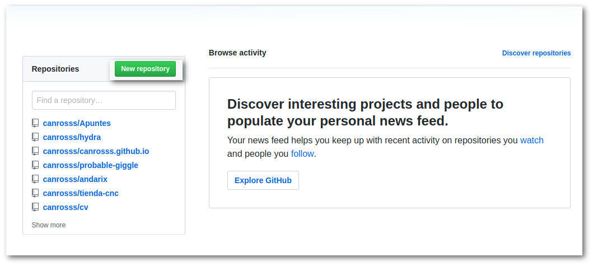
Despues hay que llenar los datos básicos como nombrar un repositorio
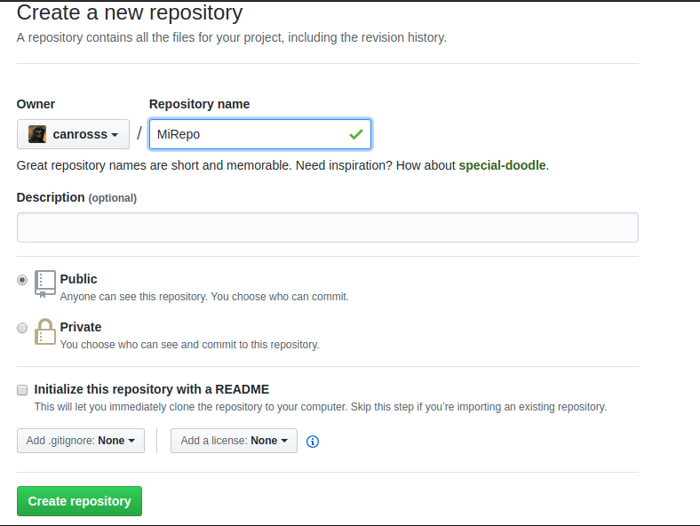
Al finalizar, damos en "Create repository"
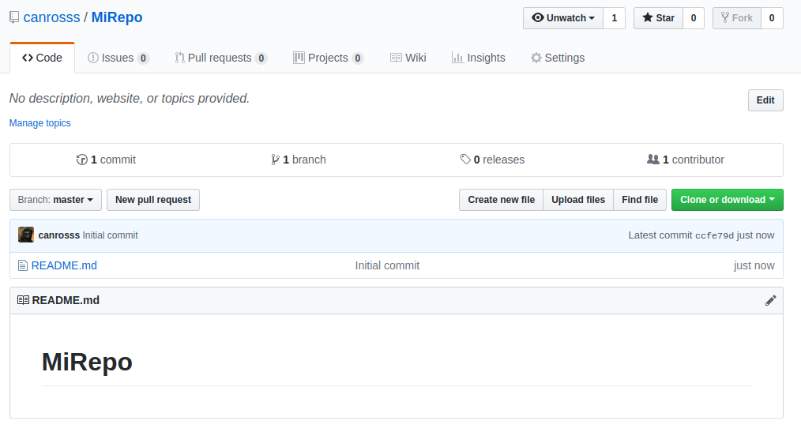
Ahora creamos en nuestro disco un directorio donde inicializaremos el repositorio y posteriormente lo vamos a conectar a GitHub.
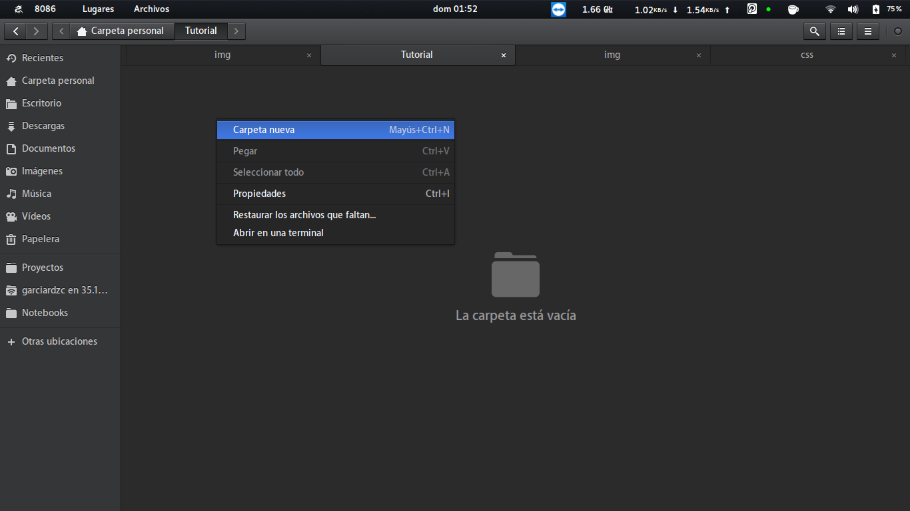
Ahora entramos al directorio nuevo al cual vamos a nombrar "MiRepo"
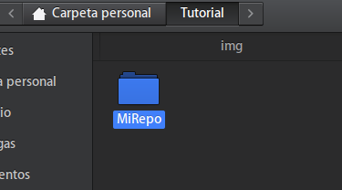
Ya desde una terminal, vamos a teclear estos comandos
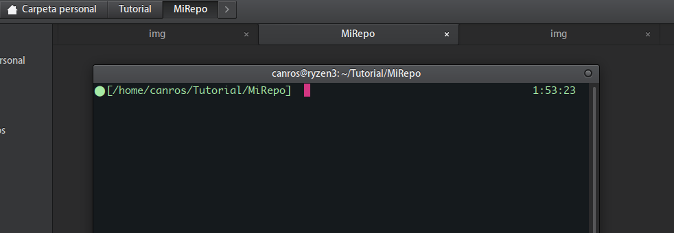
Comandos
git init
_Git_Comandos/pasted_image005.png)
git add .
git commit -m "First commit"
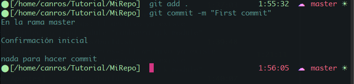
Y ahora debemos añadir el origen remoto de nuestro repositorio de GitHub
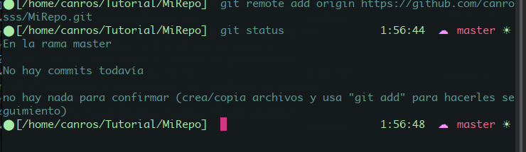
git remote add origin https://github.com/canrosss/MiRepo.git
Bien, todo parecía ir bien y al hacer el push para subir los cambios al remoto, se queja.
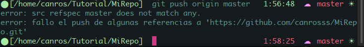
Rechaza el cambio que he hecho, me dice que hay cambios que no están en el local y me recomienda que primero actualice mi copia de trabajo con esos cambios. Sus deseos son órdenes.
git fetch origin
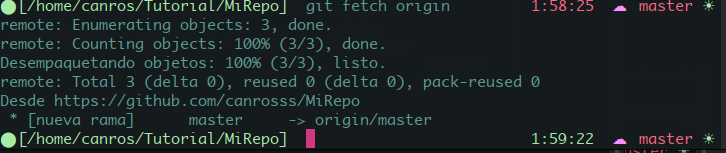
git pull origin master --allow-unrelated-histories
git push origin master
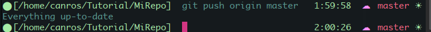
Ahora todo esta sync.
RESUMEN DE COMANDOS
Initialize the local directory as a Git repository.
git init
git add .
git commit -m "First commit"
git remote add origin https://github.com/canrosss/Apuntes.git
git remote -v
git push origin master
Bien, todo parecía ir bien y al hacer el push para subir los cambios al remoto, se queja. Rechaza el cambio que he hecho, me dice que hay cambios que no están en el local y me recomienda que primero actualice mi copia de trabajo con esos cambios. Sus deseos son órdenes.
~/proyectos/proyecto-nuevo> git fetch origin
⬤ [/home/canros/Notebooks/Apuntes/build] git fetch origin 1:17:27 ☁ master ☀
warning: no hay commits comunes
remote: Enumerating objects: 4, done.
remote: Counting objects: 100% (4/4), done.
remote: Compressing objects: 100% (3/3), done.
remote: Total 4 (delta 0), reused 0 (delta 0), pack-reused 0
Desempaquetando objetos: 100% (4/4), listo.
Desde https://github.com/canrosss/Apuntes
* [nueva rama] master -> origin/master
⬤ [/home/canros/Notebooks/Apuntes/build]
git pull origin master --allow-unrelated-histories
⬤ [/home/canros/Notebooks/Apuntes/build] git push origin master
Contando objetos: 40, listo.
Delta compression using up to 4 threads.
Comprimiendo objetos: 100% (39/39), listo.
Escribiendo objetos: 100% (40/40), 2.65 MiB | 365.00 KiB/s, listo.
Total 40 (delta 4), reused 0 (delta 0)
remote: Resolving deltas: 100% (4/4), done.
To https://github.com/canrosss/Apuntes.git
d30c61b..fd7b3d8 master -> master
⬤ [/home/canros/Notebooks/Apuntes/build]
git remote add origin https://github.com/canrosss/Apuntes.git
# Set a new remote
# Verify new remote
origin https://github.com/user/repo.git (fetch)
origin https://github.com/user/repo.git (push)
---
En caso de haber enviado cambios desde otro repo!
https://es.stackoverflow.com/questions/90567/git-push-falla-porque-otro-desarrollador-subi%C3%B3-cambios
Resumen (asumiendo que estás en master):
Si no te importa crear un commit de merge, entonces esto alcanza:
git pull
git push
Si preferís evitar el commit de merge:
git fetch
git rebase origin/master
git push
Explicación
En git, un commit es el estado de todo el repositorio en un momento dado. Además, cada desarrollador tiene una copia de todo y (si usan algo como github) existe un repositorio central. En este escenario, todos los desarrolladores hacen git pull y git push al repositorio central y ese es el único remoto. Entonces, imaginemos que inicialmente el estado de tu repositorio remoto es:
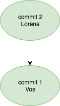
y que hiciste git pull sin problemas. Tu repositorio local tiene exactamente el mismo contenido que el repositorio remoto.
Vos estás trabajando feliz, pero Martín (otro desarrollador del equipo) hace git push... entonces el estado del repositorio remoto pasa a ser este:

vos terminás de trabajar en el bug que estás arreglando y hacés git commit... en ese momento, en tu repositorio local tenés lo siguiente:
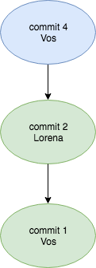
hasta ahí, todo perfecto... pero cuando hacés git push, falla con el mensaje de error de la pregunta. Esto pasa porque git no sabe qué hacer con el commit 4... supuestamente va después del commit 2, pero en el repositorio remoto, está el 3 después del 2.
La versión común
Una opción es hacer:
git pull
Esto lo que hace es traer los cambios del repositorio remoto a tu equipo e intentar hacer un merge. Si no hay conflictos, el estado final en tu equipo es el siguiente:
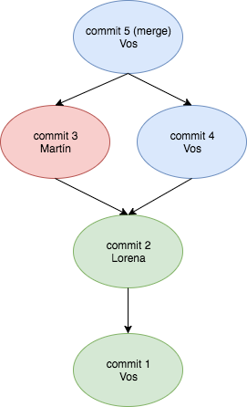
el próximo paso es subir tus cambios al remoto haciendo:
git push
y si el molesto de Martín no subió otro cambio, entonces va a funcionar sin problemas. Si falla por la misma razón, basta con repetir el procedimiento.
La versión de la brigada anti-merge
Somos varios los que vemos con malos ojos tener muchos commits de merge. Por qué? porque no agregan información. Por suerte, para los loquitos como yo, existe una forma de hacer casi lo mismo pero más prolijo.
Primero ejecutamos:
git fetch
git fetch trae los cambios del remoto pero sin tocar las branches... una vez que hacés git fetch, esto es lo que queda en tu repositorio:
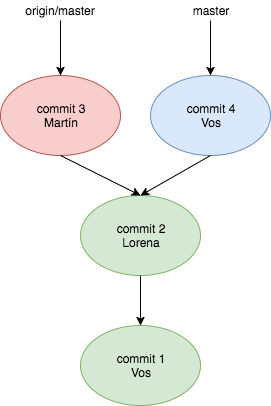
esto quiere decir que:
master (la branch en la que trabajás normalmente) sigue apuntando a tu commit
git sabe que el remoto (origin/master) apunta al commit 3
si mirás el código en tu equipo, no vas a ver rastros del commit 3
entonces... el paso mágico es:
git rebase origin/master
cuando escribís eso, git se para en origin/master (el commit 3) y repite los cambios que se hicieron dentro del commit 4. Si no hay conflictos el resultado es el siguiente:
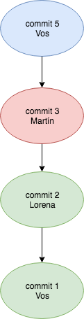
es importante destacar que ya no hay commit 4... tenemos un commit 5 que es "casi casi" como el 4, pero diferente (porque apunta al commit 3, tiene otro padre... y eso ya es suficiente para que sea otro).
si hay conflictos, vas a tener que corregirlos (la consola te dice bien qué archivos son los que hay que arreglar), agregarlos (usando git add) y finalmente seguir con el rebase (usando git rebase --continue).
Por último, es necesario subir los cambios al remoto (eso era lo que querías hacer desde el primer momento, no?). Para eso:
git push
Y listo!
Los conflictos existen y van a existir siempre (independientemente de que hagas un commit de merge o no). En lo personal, prefiero evitar los commits de merge a toda costa.
Y te dejo con una última imagen para que veas por qué puede estar bueno evitar commits de merge... sin commits de merge, la estructura de la branch queda mucho más clara:
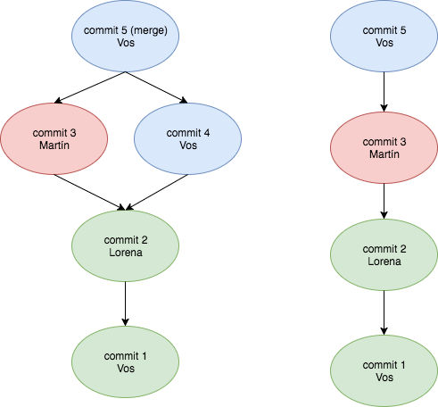